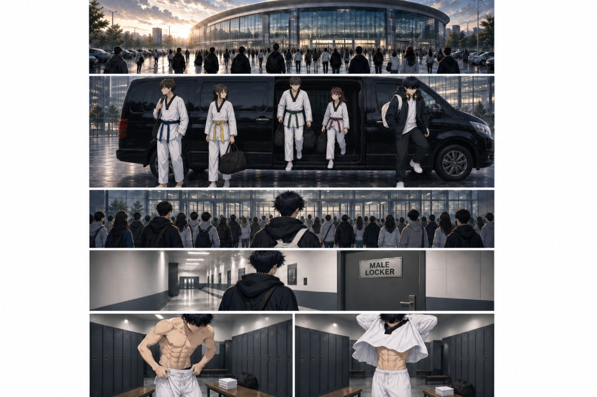
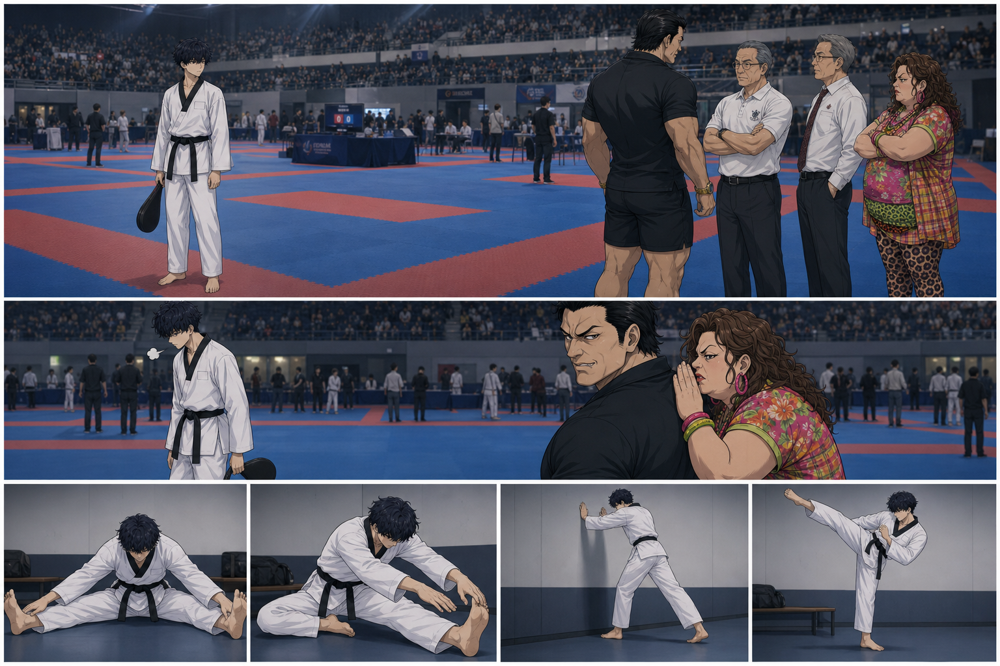
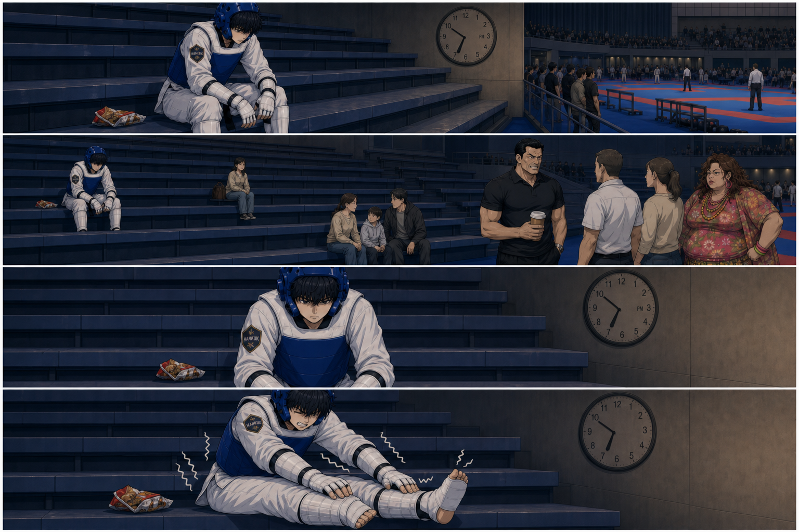

PAGE 1 — Arrival & Change (1.1–1.7)

Script (not in image)
1.1 — Title Card — Venue
empty martial arts tournament venue exterior dawn overcast desaturated wide cinematic establishing shot small Ethan Hyun silhouette approaching entrance oversized black hoodie white undershirt black c
1.2 — Premier Van
dawn parking lot Premier team van teens unloading taekwondo gear bags athletes in partial kit Ethan Hyun teen boy 15 korean-american 5 foot 3 lean long limbs dark blue Korean shadow perm hair slightly
1.3 — Parking Walk
Ethan Hyun teen boy 15 korean-american 5 foot 3 lean long limbs dark blue Korean shadow perm hair slightly messy brown eyes soft jawline sharp eyes reserved K-pop visual expression oversized black hoo
1.4 — Door Reflection
tournament venue automatic glass doors Ethan Hyun teen boy 15 korean-american 5 foot 3 lean long limbs dark blue Korean shadow perm hair slightly messy brown eyes soft jawline sharp eyes reserved K-po
1.6 — Changing — Dobok Pants
changing area bench Ethan Hyun teen boy 15 korean-american 5 foot 3 lean long limbs dark blue Korean shadow perm hair slightly messy brown eyes soft jawline sharp eyes reserved K-pop visual expression
1.7 — Tying the Belt
close-up hands tying black belt with silver embroidery over white WT dobok Premier patch Ethan Hyun teen boy 15 korean-american 5 foot 3 lean long limbs dark blue Korean shadow perm hair slightly mess
PAGE 2 — Neglect & Warmup (1.7b–1.8)

Script (not in image)
1.7b
1.8 — Kit Reveal — Toward Warmup
Ethan Hyun teen boy 15 korean-american 5 foot 3 lean long limbs dark blue Korean shadow perm hair slightly messy brown eyes soft jawline sharp eyes reserved K-pop visual expression white WT dobok blac
PAGE 4 — Isolation & Wait (1.17–1.26)

Script (not in image)
1.17 — Gear Check Line
tournament gear check wristband table official scanning athletes queue Ethan Hyun teen boy 15 korean-american 5 foot 3 dark blue shadow perm hair brown eyes, full Olympic kyorugi kit white dobok blue
1.19 — Bracket Shock
Ethan Hyun teen boy 15 korean-american 5 foot 3 lean long limbs dark blue Korean shadow perm hair slightly messy brown eyes soft jawline sharp eyes reserved K-pop visual expression, teen boy dark blue
1.21 — No Warmup
wide shot metal bleachers in gymnasium, young taekwondo fighters sitting in full protective gear
1.22 — Bleacher Isolation
Ethan Hyun teen boy 15 korean-american 5 foot 3 lean long limbs dark blue Korean shadow perm hair slightly messy brown eyes soft jawline sharp eyes reserved K-pop visual expression, lonely teen boy in
1.26 — Legs Asleep
Ethan Hyun teen boy 15 korean-american 5 foot 3 dark blue shadow perm hair brown eyes, full Olympic kyorugi kit white dobok blue electronic hogu blue helmet forearm shin foot guards Premier school pat
PAGE 5 — Favoritism & Called (1.27–1.32)
Script (not in image)
1.27 — VIP Flash Insert [FLASH — dojang enrollment]
flashback inset border taekwondo school front desk check payment VIP brochure,
1.28 — Favoritism [PRESENT — tournament venue]
taekwondo instructor kneeling adjusting favored student blue helmet tournament venue,
1.29 — Ethan's View [PRESENT — bleachers ANCHOR]
POV from bleachers looking across gymnasium at distant coach helping another student,
1.30 — Wrong Stretch [PRESENT — bleachers]
Ethan Hyun teen boy 15 korean-american 5 foot 3 lean long limbs dark blue Korean shadow perm hair slightly messy brown eyes soft jawline sharp eyes reserved K-pop visual expression, well-meaning stran
1.31 — Skill vs Silence [FLASH inset + PRESENT split]
Ethan Hyun teen boy 15 korean-american 5 foot 3 lean long limbs dark blue Korean shadow perm hair slightly messy brown eyes soft jawline sharp eyes reserved K-pop visual expression, split panel top FL
1.32 — Finally Called
Ethan Hyun teen boy 15 korean-american 5 foot 3 lean long limbs dark blue Korean shadow perm hair slightly messy brown eyes soft jawline sharp eyes reserved K-pop visual expression, teen taekwondo fig